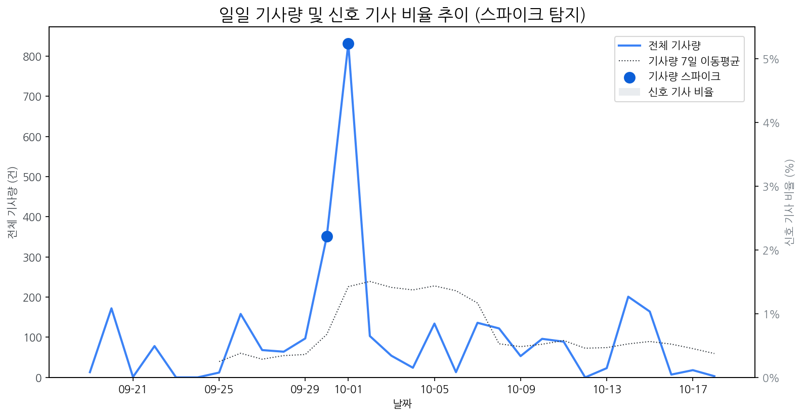

| 날짜 | 기사량 | Z-Score |
|---|---|---|
| 2025-09-30 | 351건 | 2.04 |
| 2025-10-01 | 832건 | 2.1 |
| 모멘텀 토픽 | z_like 점수 | 금일 언급량 |
|---|---|---|
| 삼성 | -1.27 | 1 |
| 날짜 | 유형 | 제목 |
|---|---|---|
| 2025-10-16 | LAUNCH | 인하대, 이정환 교수 연구실 소속 학생들 국제학술대회서 성과 인정 |
| 2025-10-19 | CERT,LAUNCH | "삼성 밀어냈다?" 폴더블 폰 판도 바꾼 모토로라의 진격 [IT+] |
| 2025-10-18 | LAUNCH | 5천 달러 저렴한 테슬라 모델 Y 스탠다드, 디자인·옵션 구성 이렇게 달... |
| 2025-10-19 | CERT,PARTNERSHIP | [Daily New유통] 쿠팡, 세븐일레븐, 놀유니버스 外 |
| 2025-10-09 | INVEST | [위기의 한국TV]②성장 더딘 OLED 속타는데…中 프리미엄 맹추격 |
| 제목 |
|---|
| [이자Car야] 세련된 외모는 ‘덤’…쏟아지는 ‘가성비 전기차’ |
| [기업기상도] 가을걷이 풍성한 기업 vs 가을비에 젖은 기업 |
| “노트북·모니터 OLED 광풍 분다”…삼성·LGD, OLED 새 활로 찾았다 |